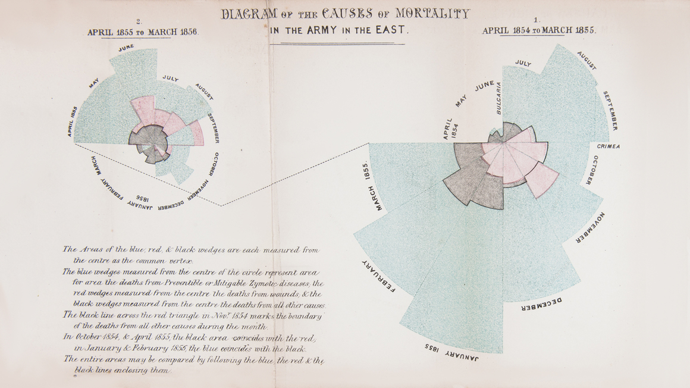
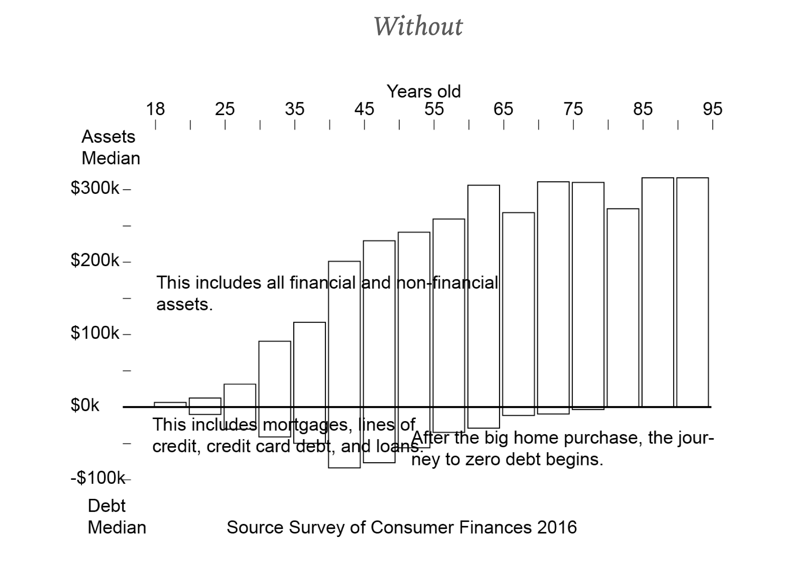
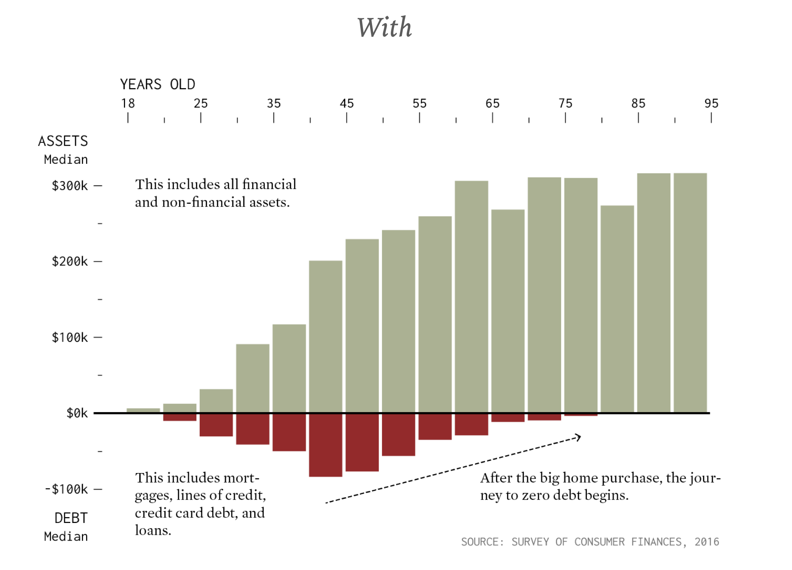
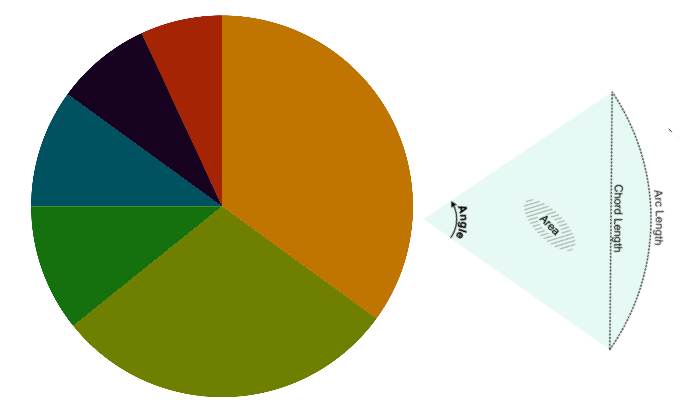
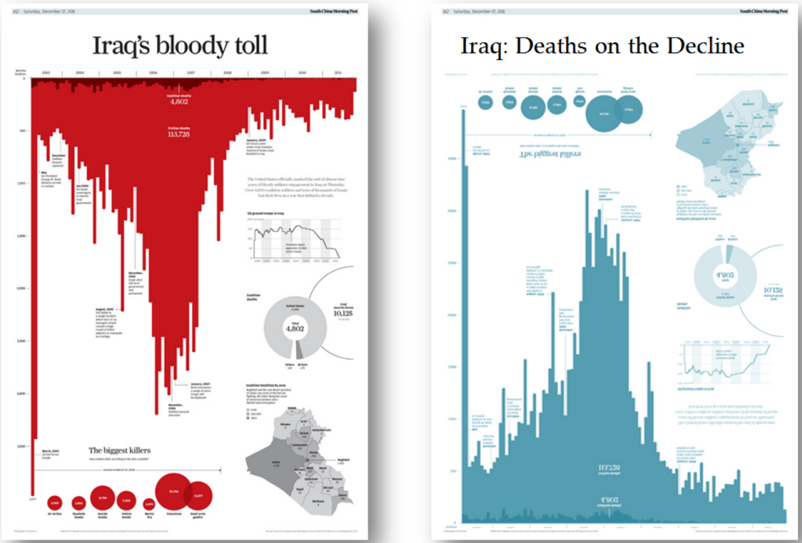

Part One
Two Reasons to Visualise
There are two fundamentally different reasons to make a chart, and confusing them is the root cause of most bad visualisations.
The first reason is analytical. You are using a chart to think — to find patterns in data you do not yet understand. The statistician John Tukey called this Exploratory Data Analysis. In 1977 he argued that before you test a hypothesis, you should look at your data. Draw it. Rotate it. See what is there. These charts are rough, quick, and private. They are not meant to be published.
The second reason is presentative. You have already found your story and now you are building a chart to communicate it to an audience. This chart will be seen by people who did not collect the data, who are busy, and who will give it a few seconds before moving on. It must earn their attention instantly.
Florence Nightingale's 1858 rose diagram — one of the most famous charts in history — is a perfect example of presentative visualisation. Nightingale had already done her analytical work; she knew that more soldiers were dying from preventable disease than from battle wounds. The rose diagram was not how she found that fact. It was how she persuaded the British military to change.

Presentative visualisation comes with a specific set of obligations that analytical charts do not have:
- You must understand your audience. The same data can require completely different approaches depending on whether the reader is a specialist, a policy-maker, or the general public. What is obvious to you — axis units, the meaning of a percentage, what counts as a large number in your domain — may be entirely opaque to them.
- You show patterns, comparisons, or trends — not raw data points. Do not plot every observation and expect readers to find the story themselves. Your job is to find it first, then make it visible.
- You need to guide the audience through your data. The chart should have a reading order: a title that tells readers what they are about to see, a visual that confirms it, and annotations that point to the moment that matters.
- You need to provide focus. A chart that shows everything equally emphasises nothing. If everything is important, nothing is.
- Remember that you know what the columns and encodings represent. Your audience does not. Every axis, colour, and shape needs to be explained. What feels like over-labelling to you often feels like barely enough to a reader seeing the data for the first time.
In this book you will mostly be building presentative charts. The analytical work — loading data, calculating summaries, spotting outliers — happens in the Python cells. The charts are what you show to a reader who has not seen any of that work.
Part Two
Visual Hierarchy
Human eyes do not scan a page randomly. They move from large to small, dark to light, coloured to grey, isolated to crowded. This is visual hierarchy — the implicit reading order your chart creates before the reader has read a single word.
A good chart uses hierarchy deliberately. The most important piece of information should be the most visually dominant. The least important — the axis labels, the source note, the tick marks — should recede. When a reader's eye lands on your chart, the story should be obvious before they have had time to read the title.


The four tools that create hierarchy are:
| Tool | How it works | Common mistake |
|---|---|---|
| Size | Larger elements attract attention first. | Making the title enormous and the data small. |
| Colour | Saturated or contrasting colours stand out from grey or muted ones. | Colouring every bar a different colour so nothing stands out. |
| Weight | Bold or thick lines pull attention before thin ones. | Using bold for axis labels and normal weight for data labels. |
| Position | Top-left is read before bottom-right; isolated elements attract attention. | Burying the key number in the bottom-right corner. |
In practice this means: put labels directly on lines instead of using a legend, write the unit in the axis title rather than leaving the reader to guess, and annotate the one data point that is the story rather than expecting readers to find it themselves.
Part Three
Rule One — No Pie Charts
The pie chart is the most popular chart type in the world, and it is almost always the wrong choice. Here is why.
A pie chart asks readers to compare angles, or arc lengths, or areas — depending on where they look. Humans are very poor at all three. We are good at comparing lengths along a common baseline. That is exactly what a bar chart provides.
Consider a pie chart with five slices: 31%, 27%, 22%, 12%, and 8%. Can you rank them instantly? Now imagine the same five numbers as horizontal bars. The ranking is obvious before you have finished reading the labels.

The problem compounds when slices have similar values. Two slices of 31% and 29% are visually indistinguishable in a pie chart. In a bar chart, the difference is clear. The moment you add a percentage label to each slice to compensate, you have admitted that the chart is not doing its job — the reader is reading numbers, not seeing a visual comparison.
| Pie chart | Bar chart |
|---|---|
| Compares angles and areas — humans are poor at this. | Compares lengths along a common baseline — humans excel at this. |
| Falls apart with more than four or five slices. | Handles any number of categories cleanly. |
| Cannot show similar values clearly. | Small differences are immediately visible. |
| Often requires percentage labels to be readable — defeating the purpose. | Optionally enhanced with value labels, but readable without them. |
The same argument applies to donut charts, which are pie charts with a hole in the middle. The hole makes the comparison even harder by removing the central reference point. If you see a donut chart, replace it with a bar chart.
Part Four
Colour as a Narrative Tool
Colour is the most powerful and most misused tool in data visualisation. Used well, it carries meaning before the reader reads a word. Used carelessly, it creates noise and introduces bias.

Colour has emotional weight
Dark, desaturated palettes read as serious, authoritative, and sober. Bright, saturated palettes read as playful, urgent, or alarming. This is not accidental — it is cultural convention built up over decades of media, branding, and design. A chart about road fatalities in dark navy and charcoal will land differently than the same chart in cheerful pastels, even with identical numbers.
Think of colour as a second title. The first title says what the chart is about. The colour palette says how you feel about it. Both are editorial decisions, and readers will sense them even if they cannot articulate them.
Colour carries cultural assumptions
Some colour associations are near-universal: red for danger, green for safe, blue for water or cold, yellow for caution. Others are deeply cultural. In many Western contexts, pink is associated with girls and blue with boys — a stereotype so entrenched that reaching for those colours when charting gender data is almost automatic. Resist it. That colour choice is not neutral; it reinforces the category it purports to merely label.
Before you assign colours to categories, ask: Am I choosing this colour because it encodes information, or because it confirms an expectation? The former is visualisation. The latter is propaganda.
Colour and overlap
When data points or shapes overlap — scatter plots, area charts, bubble maps — solid colours hide whatever is underneath. Reducing the opacity (the alpha parameter in matplotlib) reveals density. Where many points overlap, the area darkens; where points are sparse, it stays light. This turns a problem — overlap — into a feature — a density map.
Building a palette
For most charts, use a single colour for all bars or lines and vary only when the variation carries meaning. If you are comparing two groups, use two colours. If you are highlighting one bar out of ten, make nine bars grey and one bar your accent colour. A chart that uses ten different colours for ten bars is not more informative — it is more confusing.
Part Five
Where to Look for Inspiration
Learning to make good charts is partly technical and partly aesthetic. The technical part you can learn from documentation. The aesthetic part you learn by looking at work that is excellent and asking: What did they do, and why does it work?
These are the resources worth bookmarking:
| Resource | What it offers |
|---|---|
| data-to-viz.com | A decision tree: given your data type, which chart is appropriate? Includes common mistakes for each chart type and Python/R code examples. |
| The Pudding (pudding.cool) | Long-form data journalism with custom, innovative visualisations. Each piece demonstrates what is possible when you treat the chart as part of the story rather than an appendix to it. |
| NYT Graphics (nytimes.com/spotlight/graphics) | The gold standard for news-driven data visualisation. Study how they annotate, how they handle mobile layouts, and how they explain methodology without interrupting the story. |
| Reuters Graphics (graphics.reuters.com) | Clean, international, rigorous. Particularly strong on maps and on presenting data across very different cultural contexts. |
| FlowingData (flowingdata.com) | Nathan Yau's site: tutorials, analysis of good and bad charts, and a weekly newsletter. One of the best places to develop critical judgment about visualisation choices. |
The habit that will improve your work faster than any tutorial is this: when you see a published chart that stops you — that makes you understand something immediately — ask yourself what it did. Was it the sorting? The colour? The annotation? The fact that it stripped away three things you would have included? Note it down. Build a file of examples. Your eye will train faster than your hands.
Chapter Navigation
Move between chapters.